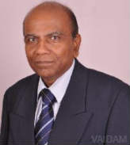

Dr. Chandran Gnanamuthu
QUALIFICATIONS
Senior Consultant , MBBS, MD, DM, FRCP, FRCP, 38 years of experience
Awards
Received Global recognition for Clinical Excellence through service, research, and education
ABOUT DOCTOR
Dr. Gnanamuthu has 38+ of experience in Neurology and Clinical Medicine and specializes in building teams to provide Advanced Specialized Medical Care to patients.
He has developed some of the leading Clinical Departments & Teams for highly specialized Neurological Care.
Dr. Chandran is known to be as India’s most renowned clinical neurologists and has received Global recognition for Clinical Excellence through service, research, and education.
His interests are in neurological infections, nervous system inflammation, para-infectious syndromes and tracing the link between genetic and epigenetic factors.
He has 70+ publications in peer-reviewed journals and paper presentations at conferences both national & international
Dr. Gnanamuthu completed MBBS 1975, MD - General Medicine in 1980 and DM - Neurology from Christian Medical College & Hospital, Vellore in 1986 and has fellowship from Royal College of Surgeon of Edinburgh, the UK in 2000.
He can be followed on LinkedIn.
SPECIALIZATION :
Parkinson’s disease
Alzheimer’s disease
Stroke
Dizziness/vertigo
Balance disorder
Neck/back pain
Spinal cord disease
Weakness/paralytic diseases
Multiple sclerosis peripheral neuropathy
WORK EXPERIENCE
Senior Consultant, Apollo Hospital, Bangalore
Senior Consultant, Sakra World Hospital, Bangalore, 2015
Professor, Christian Medical College Hospital, Vellore, 2006
Director, Northspring Healthcare, Bangalore, 2016
List Of Treatments
Temporal Lobectomy,
Lesionectomy,
Hemispherectomy,
Corpus Callosotomy,
Vagus Nerve Stimulation,
Multiple Subpial Transections MST,
VP Shunting,
Ventriculostomy,
Skull Base Surgery,
Sleep Disorders,
Restless Leg Syndrome Treatment,
Narcolepsy Treatment,
Headache,
Multiple Sclerosis Treatment,
Chronic Cerebro Spinal Venous Insufficiency Treatment,
Liberation Treatment,
Sensory Ataxia Treatment,
Cerebral Palsy - Stem Cell Treatment,
Craniotomy Surgery,
Cranioplasty,
Neural Stem Cell Therapy,
Autism - Stem Cell Treatment,
Muscular Dystrophy -...show all.